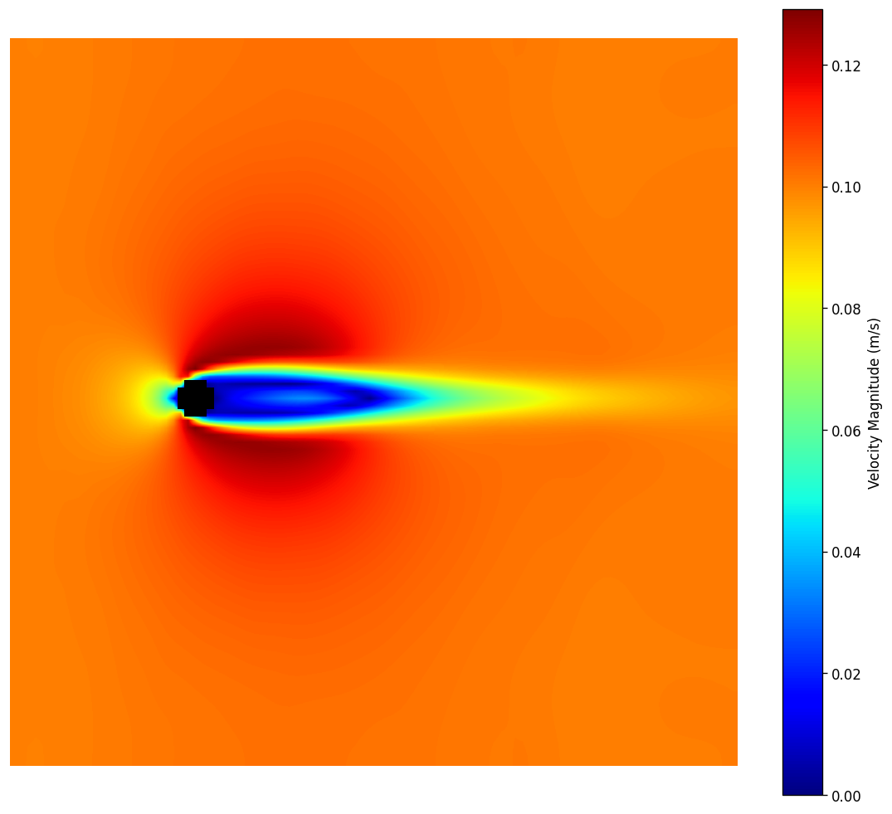
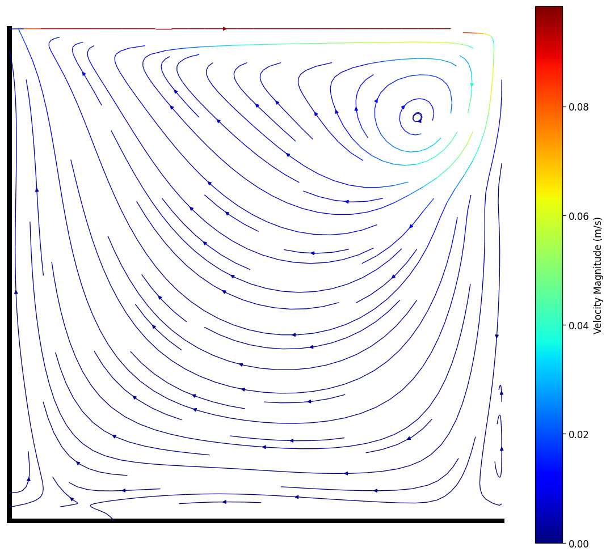
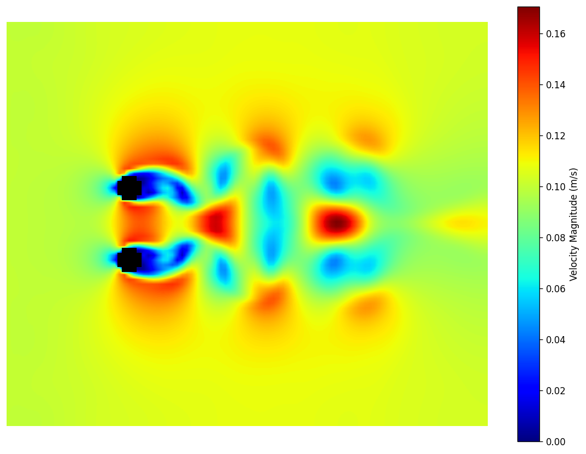
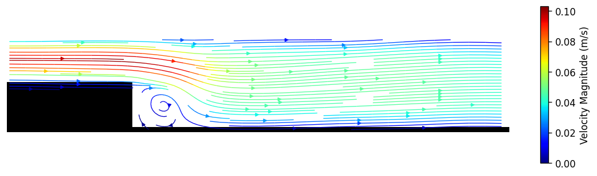

Validation Cases
The solver is tested against 4 benchmark cases spanning external aerodynamics, internal flows, and multi-body interactions.
Each case is an experiment: a different geometry, boundary condition, and Reynolds number designed to stress a specific capability of the solver, from smooth curved boundaries to turbulent separation. Every run produces velocity fields, quantitative validation against experimental or benchmark data, and a physical discussion of what the results mean. 4 benchmark cases total.

Cylinder Wake
A cylinder in steady flow, shedding the alternating von Karman vortex street.
View case →
Lid-Driven Cavity
A box with one sliding wall, spinning up a rotating eddy; the classic benchmark of solver accuracy.
View case →
Side-by-Side Cylinders
Two cylinders side by side, their wakes interacting like tube bundles in a heat exchanger.
View case →
Backward-Facing Step
Flow spilling over a sudden step, separating and reattaching downstream.
View case →